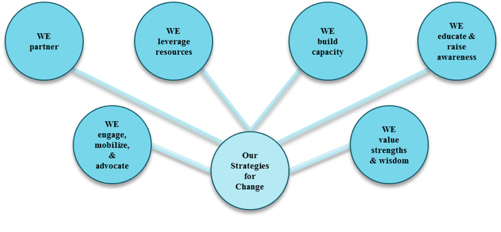

Far Northeast Health Alliance
Working Together to Support Community Wellness for All
Health:
Embodies wellness in all its dimensions: emotional, environmental, financial, intellectual, occupational, physical, social, and spiritual.
Vision:
A far northeast Denver community that is a healthy, safe, and flourishing environment for all people.
Mission:
To be a community-driven effort that promotes health and wellness in far northeast communities through resource sharing, health education, and resident mobilization.
Current Priorities
Diabetes Prevention Program (partner)
A year-long lifestyle intervention program delivered in partnership with the Montbello Branch Library
Healthy Babies, Strong Families (leverage resources & build capacity)
A Healthy Start Program that combines service delivery and collective impact to reduce infant mortality among African Americans
Healthy>Transportation Expansion Working Group (engage, mobilize, & advocate)
A community-driven effort dedicated to the development of equitable and accessible transit options
Healthy>Planting the Seed Conference (educate & raise awareness)
A Young Adults for Positive Action-sponsored community gathering that includes healthy living sessions designed to educate, raise awareness, and catalyze action
Healthy>Quality of Life Survey (value strengths & wisdom)
A means for gathering residents input to inform strategic planning and program development}
